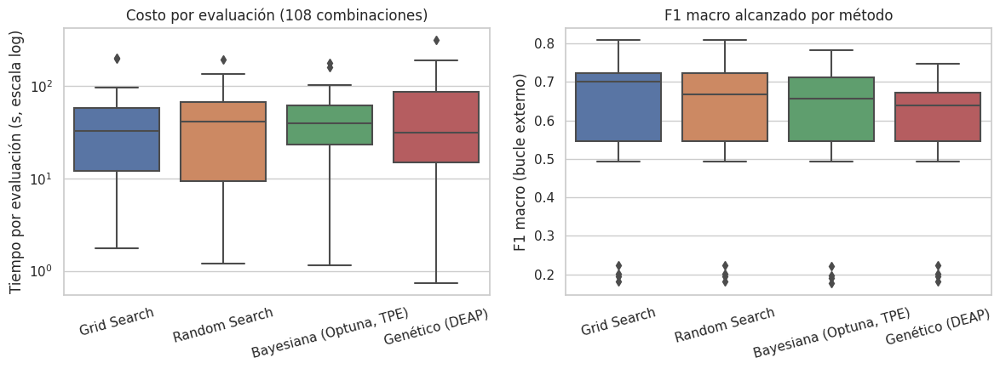
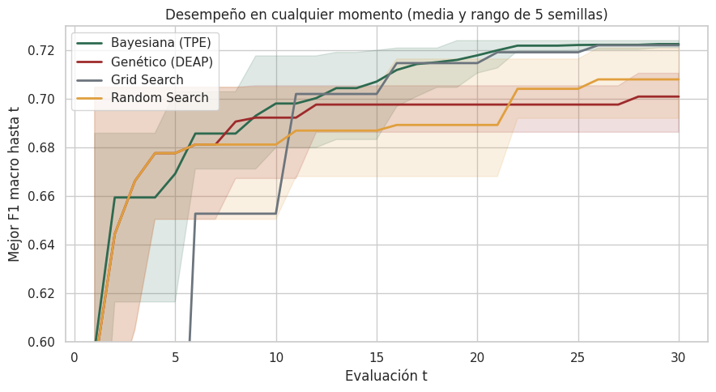
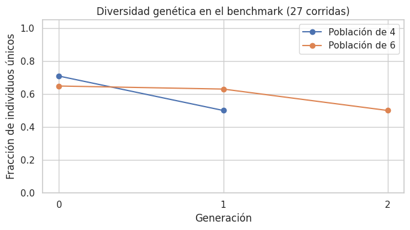
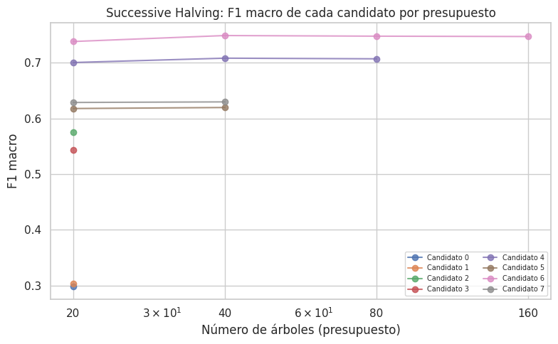

6. Comparación de los métodos de optimización de hiperparámetros#
Las 108 combinaciones aplicables del capítulo 5 se optimizaron con cuatro métodos: Grid Search (búsqueda exhaustiva sobre una rejilla), Random Search (muestreo aleatorio del espacio) [Bergstra and Bengio, 2012], optimización bayesiana con Optuna [Akiba et al., 2019] y un algoritmo genético implementado con DEAP [Fortin et al., 2012]. Este capítulo no repite los resultados de clasificación; analiza cómo llegó cada método a ellos: la calidad de la solución, el número de evaluaciones, el tiempo de reloj consumido y la velocidad de convergencia. Se complementa con un experimento controlado, con presupuesto idéntico y cinco semillas, que aísla el efecto del método de búsqueda.
Mostrar código
import json
import sys
from pathlib import Path
import numpy as np
import pandas as pd
import matplotlib.pyplot as plt
import seaborn as sns
sys.path.insert(0, str(Path.cwd().parent / "scripts"))
import _utils3 as u3
sns.set_theme(style="whitegrid", context="notebook")
RESULTS3 = Path.cwd().parent / "resultados"
tabla = pd.read_csv(RESULTS3 / "tabla_maestra.csv", encoding="utf-8-sig")
aplic = tabla[tabla["aplicable"]].copy()
aplic["tiempo_por_evaluacion_s"] = aplic["tiempo_total_s"] / aplic["evaluaciones_totales"]
ORDEN = ["Grid Search", "Random Search", "Bayesiana (Optuna, TPE)", "Genético (DEAP)"]
6.1 Configuración de los métodos dirigidos#
Optimización bayesiana. Se empleó el muestreador TPESampler de Optuna
(Tree-structured Parzen Estimator) [Bergstra et al., 2011]. A diferencia de la optimización
bayesiana clásica, que modela la función objetivo con un proceso gaussiano, el TPE modela
dos densidades sobre el espacio de hiperparámetros: \(\ell(x)\), la densidad de las
configuraciones cuyo desempeño supera un cuantil \(\gamma\) de los ensayos observados, y
\(g(x)\), la de las restantes. En cada iteración propone la configuración que maximiza el
cociente \(\ell(x)/g(x)\), lo que equivale a maximizar la mejora esperada (Expected
Improvement) bajo esta parametrización [Bergstra et al., 2011]. El modelo sustituto es, por
tanto, un par de estimadores de densidad de Parzen estructurados en árbol, y la función de
adquisición es la mejora esperada. El cuantil \(\gamma\) regula el equilibrio entre
exploración y explotación: un valor pequeño concentra la búsqueda alrededor de las mejores
configuraciones observadas, mientras que uno grande favorece la exploración. Los primeros
ensayos se muestrean de forma aleatoria (fase de arranque) para inicializar ambas
densidades.
Algoritmo genético. La configuración se mantuvo constante en todas las corridas:
Componente |
Configuración |
|---|---|
Representación |
Un gen por hiperparámetro, codificado como índice del valor en su dominio |
Selección |
Torneo ( |
Cruce |
Uniforme ( |
Mutación |
Sustitución de un gen aleatorio por otro valor válido de su dominio, con probabilidad 0,3 por individuo |
Elitismo |
El mejor individuo de cada generación pasa intacto a la siguiente |
Población y generaciones |
4 individuos y 2 generaciones en 18 corridas; 6 individuos y 3 generaciones en las 9 corridas ejecutadas antes de la reducción del presupuesto (sección 9.3) |
La selección por torneo de tamaño 3 ejerce una presión selectiva moderada, y el elitismo garantiza que la mejor solución no se pierda entre generaciones. La combinación de ambos operadores con una población pequeña acelera la pérdida de diversidad, aspecto que se cuantifica en la sección 6.5.
6.2 Calidad de la solución y costo computacional en el benchmark#
Mostrar código
por_opt = (aplic.groupby("optimizacion_nombre")
.agg(f1_medio=("f1_macro_media", "mean"),
f1_maximo=("f1_macro_media", "max"),
evaluaciones_mediana=("evaluaciones_totales", "median"),
tiempo_por_evaluacion_mediana_s=("tiempo_por_evaluacion_s", "median"),
tiempo_total_h=("tiempo_total_s", lambda s: s.sum() / 3600))
.reindex(ORDEN).round(3))
por_opt.columns = ["F1 macro medio", "F1 macro máximo", "Evaluaciones (mediana)",
"Tiempo por evaluación, mediana (s)", "Tiempo total (h)"]
por_opt.index.name = "Método"
display(por_opt)
| Método | F1 macro medio | F1 macro máximo | Evaluaciones (mediana) | Tiempo por evaluación, mediana (s) | Tiempo total (h) |
|---|---|---|---|---|---|
| Grid Search | 0.615 | 0.809 | 24.0 | 32.396 | 7.782 |
| Random Search | 0.605 | 0.809 | 24.0 | 41.073 | 7.160 |
| Bayesiana (Optuna, TPE) | 0.600 | 0.783 | 18.0 | 38.961 | 7.617 |
| Genético (DEAP) | 0.573 | 0.746 | 24.0 | 31.155 | 11.845 |
Cada evaluación corresponde a una validación cruzada interna de tres pliegues, de modo que el tiempo por evaluación incluye tres ajustes y tres predicciones. En el benchmark, Grid Search obtuvo el F1 macro medio más alto (0,615) y compartió con Random Search el máximo global (0,809). Los métodos dirigidos no aventajaron a la búsqueda exhaustiva: la optimización bayesiana alcanzó 0,600 de media con un número de evaluaciones similar, y el algoritmo genético obtuvo el valor más bajo (0,573) a pesar de consumir el mayor tiempo total (11,8 h). Este resultado tiene una explicación estructural: con rejillas de entre 4 y 18 configuraciones, Grid Search es exhaustivo con un costo comparable al de los demás métodos, mientras que el genético, con poblaciones de 4 individuos, reevalúa con frecuencia configuraciones ya visitadas.
Mostrar código
fig, ax = plt.subplots(1, 2, figsize=(12, 4.5))
sns.boxplot(data=aplic, x="optimizacion_nombre", y="tiempo_por_evaluacion_s", order=ORDEN, ax=ax[0])
ax[0].set(yscale="log", xlabel="", ylabel="Tiempo por evaluación (s, escala log)",
title="Costo por evaluación (108 combinaciones)")
sns.boxplot(data=aplic, x="optimizacion_nombre", y="f1_macro_media", order=ORDEN, ax=ax[1])
ax[1].set(xlabel="", ylabel="F1 macro (bucle externo)", title="F1 macro alcanzado por método")
for a in ax:
a.tick_params(axis="x", rotation=15)
plt.tight_layout()
plt.show()

6.3 Distancia al óptimo de la rejilla#
Para cada par algoritmo–balanceo, el resultado de Grid Search constituye el máximo alcanzable dentro de la rejilla discreta. La diferencia de cada método respecto de ese valor mide cuánto se pierde al explorar solo una fracción del espacio. En el caso del método bayesiano, cuyo espacio para los parámetros continuos no se limita a los puntos de la rejilla, una diferencia positiva indica que encontró una configuración intermedia mejor.
Mostrar código
pv = aplic.pivot_table(index=["modelo", "balanceo"], columns="optimizacion_nombre", values="f1_macro_media")
ev = aplic.pivot_table(index=["modelo", "balanceo"], columns="optimizacion_nombre", values="evaluaciones_totales")
filas = []
for m in ORDEN[1:]:
d = pv[m] - pv["Grid Search"]
filas.append({"Método": m,
"Δ F1 medio frente a Grid": d.mean(),
"Δ F1 mediano": d.median(),
"Iguala o supera a Grid (Δ ≥ −0,001)": f"{int((d >= -0.001).sum())} de {int(d.notna().sum())}",
"Pierde más de 0,01": int((d < -0.01).sum()),
"Evaluaciones relativas a Grid (mediana)": (ev[m] / ev["Grid Search"]).median()})
display(pd.DataFrame(filas).set_index("Método").round(3))
| Método | Δ F1 medio frente a Grid | Δ F1 mediano | Iguala o supera a Grid (Δ ≥ −0,001) | Pierde más de 0,01 | Evaluaciones relativas a Grid (mediana) |
|---|---|---|---|---|---|
| Random Search | -0.010 | 0.000 | 19 de 27 | 6 | 0.889 |
| Bayesiana (Optuna, TPE) | -0.015 | -0.001 | 14 de 27 | 8 | 1.000 |
| Genético (DEAP) | -0.042 | -0.009 | 12 de 27 | 12 | 1.333 |
Random Search igualó el óptimo de la rejilla en 19 de los 27 pares con una mediana del 89 % de las evaluaciones, y su pérdida media fue de 0,010. El método bayesiano lo igualó en 14 pares y perdió en promedio 0,015; el genético, en 12, con una pérdida media de 0,043 y un 33 % más de evaluaciones que la rejilla. En espacios discretos y pequeños, la ventaja teórica de la búsqueda dirigida no se materializa: con seis ensayos, la fase de arranque aleatorio del TPE consume casi todo el presupuesto antes de que el modelo sustituto pueda orientar la búsqueda.
6.4 Experimento controlado: desempeño en cualquier momento#
El benchmark no permite atribuir las diferencias exclusivamente al método, porque los presupuestos varían entre métodos y las rejillas son pequeñas. Para aislar ese efecto se diseñó un experimento controlado con las siguientes condiciones:
Modelo y datos: árbol de decisión sobre la misma submuestra de 40.000 filas y la misma validación interna de tres pliegues, con el preprocesamiento ajustado dentro de cada pliegue.
Espacio de búsqueda de cinco dimensiones:
max_depth∈ [3, 40],min_samples_leaf∈ [1, 200] (escala logarítmica),min_samples_split∈ [2, 100] (escala logarítmica),criterion∈ {gini, entropy} ymax_features∈ {todas, √p, 0,5·p}.Presupuesto idéntico: 30 evaluaciones por corrida. Grid Search solo puede cubrir dos dimensiones con 30 puntos (
max_depth×min_samples_leaf, 6 × 5), mientras que los otros tres métodos exploran las cinco.Estabilidad: Random Search, TPE (8 ensayos de arranque) y el genético (población de 6) se repiten con cinco semillas. Grid Search es determinista.
La curva de desempeño en cualquier momento (anytime performance) representa el mejor F1 macro encontrado hasta la evaluación \(t\) en función de \(t\).
Mostrar código
hist = pd.read_csv(RESULTS3 / "anytime_historial.csv", encoding="utf-8-sig")
colores = {"Grid Search": "#6c757d", "Random Search": "#e09f3e",
"Bayesiana (TPE)": "#2d6a4f", "Genético (DEAP)": "#9e2a2b"}
fig, ax = plt.subplots(figsize=(9, 5))
for metodo, d in hist.groupby("metodo"):
piv = d.pivot(index="evaluacion", columns="semilla", values="mejor_hasta_ahora")
ax.plot(piv.index, piv.mean(axis=1), lw=2, color=colores[metodo], label=metodo)
if piv.shape[1] > 1:
ax.fill_between(piv.index, piv.min(axis=1), piv.max(axis=1), color=colores[metodo], alpha=0.15)
ax.set(xlabel="Evaluación t", ylabel="Mejor F1 macro hasta t",
title="Desempeño en cualquier momento (media y rango de 5 semillas)", ylim=(0.6, 0.73))
ax.legend()
plt.tight_layout()
plt.show()

Mostrar código
optimo_grid = hist.loc[hist["metodo"] == "Grid Search", "score"].max()
filas = []
for metodo, d in hist.groupby("metodo"):
piv = d.pivot(index="evaluacion", columns="semilla", values="mejor_hasta_ahora")
final = piv.loc[piv.index.max()]
alcanza = [(piv[c] >= optimo_grid - 0.005).idxmax() if (piv[c] >= optimo_grid - 0.005).any() else np.nan
for c in piv.columns]
tiempo = d.groupby("semilla")["tiempo_acumulado_s"].max()
filas.append({"Método": metodo,
"F1 final": final.mean(),
"DE (semillas)": final.std() if len(final) > 1 else np.nan,
"F1 en t = 10": piv.loc[10].mean(),
"Área bajo la curva": piv.mean(axis=1).mean(),
"Llegan a 0,005 del óptimo": f"{int(np.sum(~np.isnan(alcanza)))} de {len(alcanza)}",
"t necesario": np.nanmean(alcanza) if np.any(~np.isnan(alcanza)) else np.nan,
"s por evaluación": (tiempo / piv.index.max()).mean()})
anytime_tab = pd.DataFrame(filas).set_index("Método").reindex(list(colores)).reset_index()
display(anytime_tab.style.hide(axis="index").format({"F1 final": "{:.4f}", "DE (semillas)": "{:.4f}", "F1 en t = 10": "{:.4f}",
"Área bajo la curva": "{:.4f}", "t necesario": "{:.1f}",
"s por evaluación": "{:.2f}"}, na_rep="—"))
| Método | F1 final | DE (semillas) | F1 en t = 10 | Área bajo la curva | Llegan a 0,005 del óptimo | t necesario | s por evaluación |
|---|---|---|---|---|---|---|---|
| Grid Search | 0.7221 | — | 0.6528 | 0.6629 | 1 de 1 | 21.0 | 0.96 |
| Random Search | 0.7081 | 0.0121 | 0.6813 | 0.6863 | 1 de 5 | 26.0 | 0.67 |
| Bayesiana (TPE) | 0.7226 | 0.0012 | 0.6982 | 0.7001 | 5 de 5 | 16.6 | 1.09 |
| Genético (DEAP) | 0.7010 | 0.0094 | 0.6924 | 0.6884 | 0 de 5 | — | 0.83 |
El experimento controlado aporta la evidencia cuantitativa que el benchmark no podía ofrecer:
El TPE obtiene la mejor solución y la más estable. Tras 30 evaluaciones alcanza un F1 macro medio de 0,7226, con una desviación estándar entre semillas de 0,0012, y supera el óptimo de la rejilla (0,7221) en tres de las cinco semillas. Las cinco corridas llegan a menos de 0,005 de ese óptimo con 17 evaluaciones en promedio, frente a las 21 que necesita Grid Search. Random Search lo consigue en una sola corrida y el genético en ninguna.
La calidad por unidad de presupuesto favorece al TPE. El área bajo la curva, que resume la calidad alcanzada a lo largo de todo el presupuesto, es de 0,700 para el TPE, frente a 0,688 del genético, 0,686 de Random Search y 0,663 de Grid Search. La ventaja del TPE proviene de que, tras la fase de arranque, concentra los ensayos en la región de árboles profundos con hojas mínimas pequeñas, que es donde se encuentra el óptimo.
El desempeño temprano de Grid Search depende del orden de recorrido. La rejilla evalúa primero los árboles poco profundos, por lo que su curva es la más baja durante las primeras 11 evaluaciones; su óptimo solo aparece en la evaluación 26. En un espacio de cinco dimensiones, una rejilla con el mismo presupuesto solo puede explorar dos.
El genético converge prematuramente. Mejora con rapidez en las primeras diez evaluaciones, gracias a la población inicial aleatoria, pero se estanca en torno a 0,70 porque la población de seis individuos pierde diversidad antes de alcanzar la región óptima.
El costo por evaluación es similar entre métodos (entre 0,7 y 1,1 s). Las diferencias de tiempo total reflejan sobre todo las configuraciones que cada método decide evaluar (los árboles más profundos son más costosos) y no la sobrecarga del propio optimizador.
Estos resultados reconcilian los dos experimentos. La ventaja de la optimización bayesiana aparece cuando el espacio tiene varias dimensiones, el presupuesto supera holgadamente la fase de arranque y la rejilla no puede cubrir todas las dimensiones. En el benchmark, con espacios de 4 a 18 puntos discretos y seis ensayos, ninguna de esas condiciones se cumplía.
6.5 Diversidad genética#
La diversidad de la población se mide como la fracción de individuos distintos en cada generación. Una caída rápida hacia valores bajos indica convergencia prematura: la población se homogeneiza antes de explorar el espacio de búsqueda.
Mostrar código
filas = []
for log_path in sorted(RESULTS3.glob("benchmark_log*.jsonl")):
filas.extend(json.loads(l) for l in open(log_path, encoding="utf-8") if l.strip())
genet = [r for r in filas if r.get("status") == "ok" and r.get("diversidad_genetica")]
div = pd.DataFrame([{"generacion": g["generacion"], "fraccion_unicos": g["individuos_unicos"] / g["tam_poblacion"],
"poblacion": g["tam_poblacion"]}
for r in genet for g in r["diversidad_genetica"]])
resumen_div = div.groupby(["poblacion", "generacion"])["fraccion_unicos"].agg(["mean", "count"]).round(3)
resumen_div.columns = ["Fracción media de individuos únicos", "Corridas"]
resumen_div.index.names = ["Tamaño de población", "Generación"]
display(resumen_div)
fig, ax = plt.subplots(figsize=(7, 4))
for pob, d in div.groupby("poblacion"):
m = d.groupby("generacion")["fraccion_unicos"].mean()
ax.plot(m.index, m.values, "o-", label=f"Población de {pob}")
ax.set(xlabel="Generación", ylabel="Fracción de individuos únicos", ylim=(0, 1.05),
title="Diversidad genética en el benchmark (27 corridas)")
ax.set_xticks([0, 1, 2])
ax.legend()
plt.tight_layout()
plt.show()
| Tamaño de población | Generación | Fracción media de individuos únicos | Corridas |
|---|---|---|---|
| 4 | 0 | 0.708 | 18 |
| 4 | 1 | 0.500 | 18 |
| 6 | 0 | 0.648 | 9 |
| 6 | 1 | 0.630 | 9 |
| 6 | 2 | 0.500 | 9 |

La fracción media de individuos únicos parte de 0,69 en la población inicial, porque en espacios de 4 a 18 configuraciones la inicialización aleatoria ya produce duplicados, y desciende a 0,50 en la última generación. Con poblaciones de 4 individuos, el torneo de tamaño 3 selecciona casi siempre al mismo individuo dominante, y el elitismo lo preserva; el resultado es una búsqueda que reevalúa configuraciones repetidas. Esta pérdida de diversidad explica tanto el F1 macro inferior del genético en el benchmark como su estancamiento en el experimento controlado.
6.6 Optimización multifidelidad: Successive Halving#
Como técnica complementaria de eficiencia se implementó Successive Halving
[Jamieson and Talwalkar, 2016, Li et al., 2018] sobre Random Forest. La fidelidad es el número de
árboles (n_estimators): con pocos árboles, el orden relativo entre configuraciones ya
anticipa el orden con muchos árboles, de modo que no es necesario evaluar con el
presupuesto completo las configuraciones claramente inferiores. El procedimiento parte de
8 configuraciones (max_depth ∈ {5, 10, 15, 20} × min_samples_leaf ∈ {1, 10}) evaluadas
con 20 árboles. En cada ronda se descarta la mitad con peor desempeño y se duplica el
presupuesto de las restantes (factor de reducción \(\eta = 2\)): 40 árboles para 4
configuraciones, 80 para 2 y 160 para la última.
Mostrar código
historial = pd.read_csv(RESULTS3 / "multifidelidad_historial.csv", encoding="utf-8-sig")
with open(RESULTS3 / "multifidelidad_resumen.json", encoding="utf-8") as f:
resumen_mf = json.load(f)
mf = historial.rename(columns={"candidato": "Candidato", "config": "Configuración", "n_estimators": "Árboles",
"f1_macro": "F1 macro", "tiempo_s": "Tiempo (s)"}).round(3)
display(mf)
print(f"Configuración ganadora: {resumen_mf['ganador']}")
print(f"Costo de Successive Halving: {resumen_mf['costo_successive_halving_s']:.1f} s")
print(f"Costo de evaluar las 8 configuraciones con 160 árboles: {resumen_mf['costo_grid_pleno_s']:.1f} s")
print(f"Ahorro: {resumen_mf['ahorro_relativo'] * 100:.1f} %")
| Candidato | Configuración | Árboles | F1 macro | Tiempo (s) | |
|---|---|---|---|---|---|
| 0 | 0 | {'max_depth': 5, 'min_samples_leaf': 1} | 20 | 0.298 | 1.471 |
| 1 | 1 | {'max_depth': 5, 'min_samples_leaf': 10} | 20 | 0.303 | 1.477 |
| 2 | 2 | {'max_depth': 10, 'min_samples_leaf': 1} | 20 | 0.575 | 2.531 |
| 3 | 3 | {'max_depth': 10, 'min_samples_leaf': 10} | 20 | 0.543 | 2.559 |
| 4 | 4 | {'max_depth': 15, 'min_samples_leaf': 1} | 20 | 0.700 | 3.681 |
| 5 | 5 | {'max_depth': 15, 'min_samples_leaf': 10} | 20 | 0.618 | 3.674 |
| 6 | 6 | {'max_depth': 20, 'min_samples_leaf': 1} | 20 | 0.738 | 4.897 |
| 7 | 7 | {'max_depth': 20, 'min_samples_leaf': 10} | 20 | 0.629 | 4.018 |
| 8 | 6 | {'max_depth': 20, 'min_samples_leaf': 1} | 40 | 0.749 | 9.784 |
| 9 | 4 | {'max_depth': 15, 'min_samples_leaf': 1} | 40 | 0.708 | 7.958 |
| 10 | 7 | {'max_depth': 20, 'min_samples_leaf': 10} | 40 | 0.630 | 7.818 |
| 11 | 5 | {'max_depth': 15, 'min_samples_leaf': 10} | 40 | 0.620 | 7.201 |
| 12 | 6 | {'max_depth': 20, 'min_samples_leaf': 1} | 80 | 0.748 | 19.466 |
| 13 | 4 | {'max_depth': 15, 'min_samples_leaf': 1} | 80 | 0.707 | 15.996 |
| 14 | 6 | {'max_depth': 20, 'min_samples_leaf': 1} | 160 | 0.747 | 37.999 |
Configuración ganadora: {'max_depth': 20, 'min_samples_leaf': 1}
Costo de Successive Halving: 130.5 s
Costo de evaluar las 8 configuraciones con 160 árboles: 1636.6 s
Ahorro: 92.0 %
Mostrar código
fig, ax = plt.subplots(figsize=(8, 5))
for cand in historial["candidato"].unique():
sub = historial[historial["candidato"] == cand].sort_values("n_estimators")
ax.plot(sub["n_estimators"], sub["f1_macro"], "o-", label=f"Candidato {cand}", alpha=0.8)
ax.set(xscale="log", xlabel="Número de árboles (presupuesto)", ylabel="F1 macro",
title="Successive Halving: F1 macro de cada candidato por presupuesto")
ax.set_xticks([20, 40, 80, 160])
ax.set_xticklabels(["20", "40", "80", "160"])
ax.legend(fontsize=7, ncol=2)
plt.tight_layout()
plt.show()

La configuración ganadora (max_depth = 20, min_samples_leaf = 1) ya ocupaba el primer
lugar con 20 árboles, y el orden entre configuraciones se mantuvo en todas las rondas: las
curvas no se cruzan. Por esa razón, Successive Halving pudo descartar en cada ronda las
configuraciones menos profundas sin pérdida de calidad, con un ahorro del 92 % del
costo frente a evaluar las ocho configuraciones con 160 árboles (131 s frente a 1.637 s).
La métrica de fidelidad (número de árboles) es adecuada para Random Forest porque el error de un bosque converge de forma monótona al aumentar el número de árboles [Breiman, 2001]; agregar árboles reduce la varianza sin cambiar el sesgo de cada árbol, de modo que el orden relativo entre configuraciones se estabiliza con pocos árboles. El factor \(\eta = 2\) es el más conservador: descarta la mitad de los candidatos en cada ronda, lo que reduce el riesgo de eliminar prematuramente una configuración prometedora a cambio de un ahorro menor que con \(\eta = 3\). El F1 macro del ganador se estabiliza a partir de 40 árboles (0,749 con 40 y 0,747 con 160), lo que confirma que la fidelidad baja es informativa.
Nota
Esta sección usa una rejilla propia de Random Forest, distinta de la del capítulo 5, y un protocolo de validación simple en lugar del anidado. Su objetivo es cuantificar el ahorro de cómputo de la técnica multifidelidad, no reemplazar los resultados del benchmark.
6.7 Síntesis#
En el benchmark, con espacios discretos de 4 a 18 puntos y presupuestos de seis evaluaciones, Grid Search fue el método más eficaz y Random Search el más eficiente: este último igualó el óptimo de la rejilla en el 70 % de los casos con el 89 % de las evaluaciones. Los métodos dirigidos no mostraron ventaja.
En el experimento controlado, con un espacio de cinco dimensiones y 30 evaluaciones, la optimización bayesiana (TPE) alcanzó la mejor solución, con la menor variabilidad entre semillas y el mayor desempeño por unidad de presupuesto.
El algoritmo genético fue el menos eficiente en ambos escenarios por la pérdida rápida de diversidad que imponen las poblaciones pequeñas.
Successive Halving redujo el costo en un 92 % sin pérdida de calidad, y es la técnica de eficiencia más rentable cuando existe una fidelidad monótona.